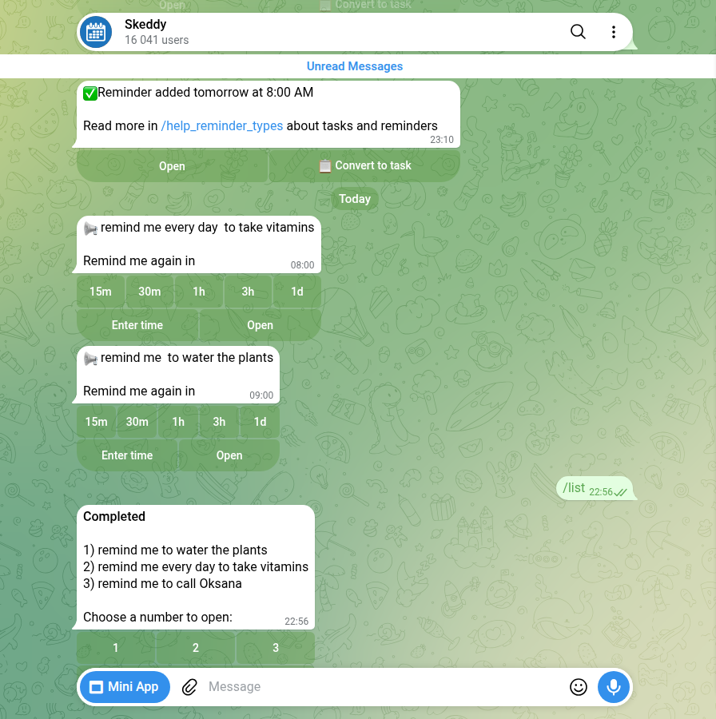

Telegram Reminder Bots: 82 Checked, 3 Actually Remind You
I searched Telegram for reminder bots on 18 October and got 79 of them. None had the verified badge. I added three more that a “best Telegram bots” list from April recommends, and sent all 82 the same few messages over four days. Three set a reminder from a plain sentence and then sent it. Only one of the three got all three tests right.
That sounds harsh, so here’s what the tests were. A reminder bot has one job: you type what and when, and later it pings you. I checked three things a normal person types: “in 5 minutes”, “at 09:00 tomorrow”, and “every day at 08:00”. Then I waited for the pings and wrote down the second each one arrived.
How I tested
- Corpus. 14 searches in Telegram’s own search box: reminder bot, reminder, remind me, remind, reminders, daily reminder, recurring reminder, birthday reminder, todo bot, task reminder, notification bot, alarm bot, and the Ukrainian and Russian words for “reminder”. That gave 79 different bots. “Daily reminder” returned nothing at all. The three web picks were @SkeddyBot, @RemindMe_Bot and @myspaceio_bot. None of the three showed up in Telegram’s search for any of my 14 searches.
/start, then 10 seconds. 28 of the 82 answered. 54 said nothing, and 2 of the 28 wanted my phone number before anything else.- Test 1, relative time. Every bot that answered got one message: remind me in 5 minutes to call Oksana. Oksana is made up. Where a bot answered with a setup menu, I pressed the option that matched and sent the sentence again.
- Test 2, a clock time. The bots that passed test 1 got remind me at 09:00 tomorrow to water the plants. I didn’t touch any time-zone setting first, so I could see what each bot assumed.
- Test 3, every day. The same bots got remind me every day at 08:00 to take vitamins. A daily reminder has to fire on two mornings in a row to count.
I was in Kyiv, which on those dates was UTC+3. Nothing was paid for, no channel was joined, and every reminder I created has since been deleted.
The results
| What happened | Bots | Who |
|---|---|---|
Silent on /start | 54 | Including @RemindMe_Bot and @myspaceio_bot from the April list |
| Set a reminder from the sentence and sent it | 3 | @KindlyRemindlyBot, @SkeddyBot, @personal_reminding_bot |
Answered /start, then silent to the sentence | 15 | Birthday, medicine, task and alert bots; most want their own commands or buttons |
| Not a reminder bot for you | 9 | Company login bots, a real-estate channel, football club news, language-school lessons, a phone-number gate, error messages |
| Broadcast list | 1 | A Manybot channel; I sent /off and it confirmed |
Silent doesn’t always mean dead. Many of the 82 look like bots built for one company or one group: fuel payments, air-raid alerts for one region, Zoom reminders for one organisation, a medicine bot whose account “awaits admin approval”. They come up when you search “reminder”, but they were never meant for you.
@KindlyRemindlyBot: the one that got everything right
@KindlyRemindlyBot starts with a language menu (eight languages), then asks you to share your location so it can work out your time zone. I didn’t share it. There’s a “Browse countries” button instead: U, Ukraine, and it showed “Europe/Kyiv (UTC+03:00) ⏰ Local time: 00:00 — Is this your timezone?”. One tap on Correct and setup was done.
Then the three tests:
- In 5 minutes. It answered “Schedule: 19 Oct 2026 at 00:06, Europe/Kyiv” and sent “🔔 Call Oksana” at 00:06:00. It cut “remind me” out of the task, which is what a person would do.
- At 09:00 tomorrow. “📝 Water the plants · 20 Oct 2026 at 09:00 · Europe/Kyiv”. The reminder arrived at 09:00:00 on the dot.
- Every day at 08:00. The confirmation said “Daily at 08:00”. The first reminder came at 08:00:01 on 20 October and already said “⏭️ Next: 21 Oct 2026 08:00”. The second came at 08:00:00 on 21 October with “Next: 22 Oct 2026 08:00”. Two mornings in a row, so it really repeats.
Each reminder has its own Delete button, and it deletes that reminder. When I pressed it on the plants reminder, a pop-up said “Reminder “Water the plants” was deleted” and the buttons disappeared from that message. That sounds too obvious to mention. It isn’t, as you’ll see below.
@SkeddyBot: on time, but “every day” became once
@SkeddyBot is the biggest bot in this test, with 16,289 monthly users on 18 October, and the one most web lists name. It wants a time zone first and offers its mini app or “Set up in chat”. The quick list in chat has eight zones: Kolkata, Tehran, Singapore, Ho Chi Minh City, Lagos, Moscow, London and New York. Kyiv isn’t there. I found it under “See all”, then Europe, then page two, where it’s stored as “Europe/Kiev”, the old spelling.
Its timing was excellent. “In 5 minutes” arrived exactly 5 minutes after I sent it, to the second. “At 09:00 tomorrow” arrived at 09:00:07. But the text of the reminder is your sentence with the time cut out, so the ping says “📢 remind me to call Oksana”, with the extra space where the time used to be.
The daily test is where it went wrong. Skeddy answered “✅Reminder added tomorrow at 8:00 AM”. It sent “remind me every day to take vitamins” at 08:00:05 on 20 October, and that was it. When I typed /list that evening, it said “Active: You don’t have any reminders yet”. Under “Show completed” was my vitamins reminder, finished after one go. Skeddy cut “at 08:00” out of the sentence and left “every day” in the text.

/list showed it as completed, with “every day” still in the text.That isn’t me reading too much into a list. Skeddy’s own help page on reminder types says: “A one-off moves to the Completed tab; a repeating one stays in the Active tab with its next time.” Mine moved to Completed. Its /formats command lists the wordings it understands: “at 7pm”, “tomorrow at 20:15”, “in 20 minutes”, “every 10 minutes” and a few more. There’s no example of “every day at” a time. The description also says repeating schedules like “pay bills on the 1st day of every month at 7pm” are made in its web interface. So in chat, the daily reminder you’d naturally type comes out as a one-off, and nothing in the reply warns you.
@personal_reminding_bot: a day late, then gone
@personal_reminding_bot is the only bot that made a reminder from my very first sentence, with no setup. It speaks Russian after you pick a language, and it translated my task: “call Oksana” became “Позвонить Оксане”. It also counts down a trial: “9 trial reminders left” after the first one, then 8, then 7.
The time was right and the day was wrong. I wrote at 23:48 on 18 October. It answered with the correct clock time, 23:53, and the next run at “23:53 19.10.2026 (in 1 day 4 minutes)”. It did what it said: the reminder came at 23:53:00 on 19 October, almost exactly 24 hours late.
Two more things I found only by going back to the chat:
- The reminders don’t stay. I watched the Oksana reminder arrive. A day later it wasn’t in the chat, and there was no trace of the plants or vitamins reminders due the next morning either. The only record was a “History” button on the reminder card, which said the vitamins reminder came at 08:00 on 20 October. If you miss the notification, there’s nothing in the chat to scroll back to.
- The Delete button can hit the wrong reminder. I pressed Delete under the old Oksana reminder. The bot rewrote that message into “Take vitamins … Delete this reminder? It can’t be restored”. That was my newest reminder, not the one I pressed it under. I pressed Cancel and the vitamins reminder was still there. Read the confirmation before you tap “Yes”.
The daily test worked, though the bot never said it would. Its reply to “every day at 08:00” gave the time and the next run and nothing else, no “daily” anywhere. Neither morning’s reminder stayed in the chat. But on the evening of 21 October the History button listed two arrivals, 08:00 on 20 October and 08:00 on 21 October, and the card had the next one down for 08:00 on 22 October. So it does repeat, and the card is the only place that tells you. When I deleted it, the confirmation named the vitamins reminder, which by then was the only one left.
Time zones, and the clock change on 25 October
On 25 October 2026 Ukraine moved its clocks back an hour, from UTC+3 to UTC+2. Timeanddate lists the change for 04:00 that Sunday, and the bill to stop changing clocks hadn’t come into force. Moscow stayed at UTC+3. So until that date, a bot that quietly assumed Moscow time looked correct for Kyiv.
@KindlyRemindlyBot and @SkeddyBot both store a named zone, “Europe/Kyiv” and “Europe/Kiev”. A named zone carries the clock change with it. @personal_reminding_bot never asked me for a zone, and its settings only offer fixed offsets, from UTC-5 to UTC+12, with no cities. A fixed offset doesn’t move when the clocks do. Its 09:00 matched Kyiv in the test week because Kyiv and UTC+3 were the same until 25 October.
On 26 October, the day after the change, I sent the same line to it and to @KindlyRemindlyBot at 22:52 Kyiv time: remind me at 23:05 to check the clock. @KindlyRemindlyBot set it for “26 Oct 2026 at 23:05, Europe/Kyiv” and rang at 23:05:01. @personal_reminding_bot set it for “23:05 27.10.2026”, in 23 hours 12 minutes. By its UTC+3 clock it was already 23:52, so 23:05 had passed, and 23:05 tomorrow in UTC+3 is 22:05 in Kyiv. Until you switch its offset to UTC+2 by hand, every reminder it sets rings an hour early, and one asked for within the next hour gets pushed to the next day as well. I deleted both reminders afterwards.
If you set reminders across a clock change, check the zone setting says a city, not a number.
A bot you message once can message you again
One bot in the test, @chuseojunsupportbot, answered /start, ignored my reminder, and about 23 hours later sent me a series of messages about USDT exchange rates in rupees from a “Hacker Fund”. I didn’t answer. Starting a bot gives it permission to write to you. If a “reminder” bot starts sending you money offers, block it.
The Manybot list I mentioned works the same way, just politely: your first message subscribes you, and it tells you to send /off to stop.
Do you need a bot at all?
For a one-off reminder, no. Telegram has had scheduled messages since 2019. Telegram’s announcement says: “Hold the ‘Send’ button in any chat and select ‘Schedule Message’”, and “Scheduling also works in your ‘Saved Messages’ chat, turning your planned posts into reminders.” You get a notification when it’s sent. I didn’t test it for this post, so that’s Telegram’s description, not my measurement.
For something that repeats, you do need a bot. Repeating scheduled messages aren’t built into Telegram. A request for them on Telegram’s suggestion platform has been open since October 2021 and had 111 votes when I checked on 19 October. That gap is exactly what the daily test measured, and only @KindlyRemindlyBot said “Daily” back to me.
What I didn’t test
- Groups. “Telegram reminder bot for groups” is a common search. I only tested private chats.
- Voice messages. @personal_reminding_bot says you can say your reminder out loud. I typed everything.
- Mini apps. Kindly and Skeddy both have one for editing reminders. I used the chat only.
- Paid plans. @personal_reminding_bot has a Premium button and a trial counter. I bought nothing.
- Other wordings. One sentence per test. A bot that missed “every day at 08:00” may understand another way of putting it, or set it up in its mini app.
How to pick a reminder bot in two minutes
- Send it a reminder for 2 minutes from now. If it doesn’t come, you’ve lost two minutes, not a missed appointment.
- Read the date in the confirmation, not just the time. One bot here had the right time on the wrong day, and said so in its own reply.
- For anything that repeats, check the reply says “daily” or “every day”. If it just says “tomorrow”, you’ve set a one-off.
- Look at the time-zone setting. A city name follows clock changes. A bare “UTC+3” doesn’t.
- Before you tap “Yes, delete”, read which reminder it names.
- Block any bot that starts sending you offers.
Reminder set for game night?
The Telegram Party Pack is plain text you paste into the group chat: 110 Truth or Dare, 45 Never Have I Ever, 30 Would You Rather, 30 Most Likely To, 25 Paranoia and 15 Story Chain prompts, with ready-made poll blocks and a host guide. No bot to add, nothing reading your group.
Get the pack — $9.99Frequently asked questions
What is the best Telegram reminder bot?
In this test @KindlyRemindlyBot was the only bot that got a 5-minute reminder, a next-morning reminder and a daily reminder right from plain English sentences, in the correct time zone. @SkeddyBot was just as punctual but turned “every day at 08:00” into a one-off.
How do I set a daily reminder in Telegram?
Telegram itself only schedules one-off messages, so a repeating reminder needs a bot. Send the bot a sentence like “remind me every day at 08:00 to take vitamins” and check that its reply says “daily”. @KindlyRemindlyBot answered “Daily at 08:00” and showed the next date in every reminder.
Can I set a reminder in Telegram without a bot?
Yes, for a one-off. Hold the Send button, choose Schedule Message, and pick a time. In Saved Messages that works as a reminder to yourself. It doesn’t repeat.
Why did my Telegram reminder come at the wrong time?
Usually the time zone. Some bots assume one without asking, and some only offer fixed offsets like UTC+3 that don’t follow clock changes. One bot in this test also put a 5-minute reminder on the next day. Check the date and zone in the bot’s confirmation.
Related reading
- Fun Telegram bots: 117 opened, 16 work
- Telegram bots for groups: 115 opened, 20 work
- Telegram translator bots: 78 tested, 7 translated
- Telegram inline bots list: 38 tested, 28 still work
- Telegram sticker bots: 59 tested with 1 sticker and 1 photo
- Telegram AI bots: 91 tested, the only verified one is off
- Telegram converter bots: 96 messaged, 25 did the job